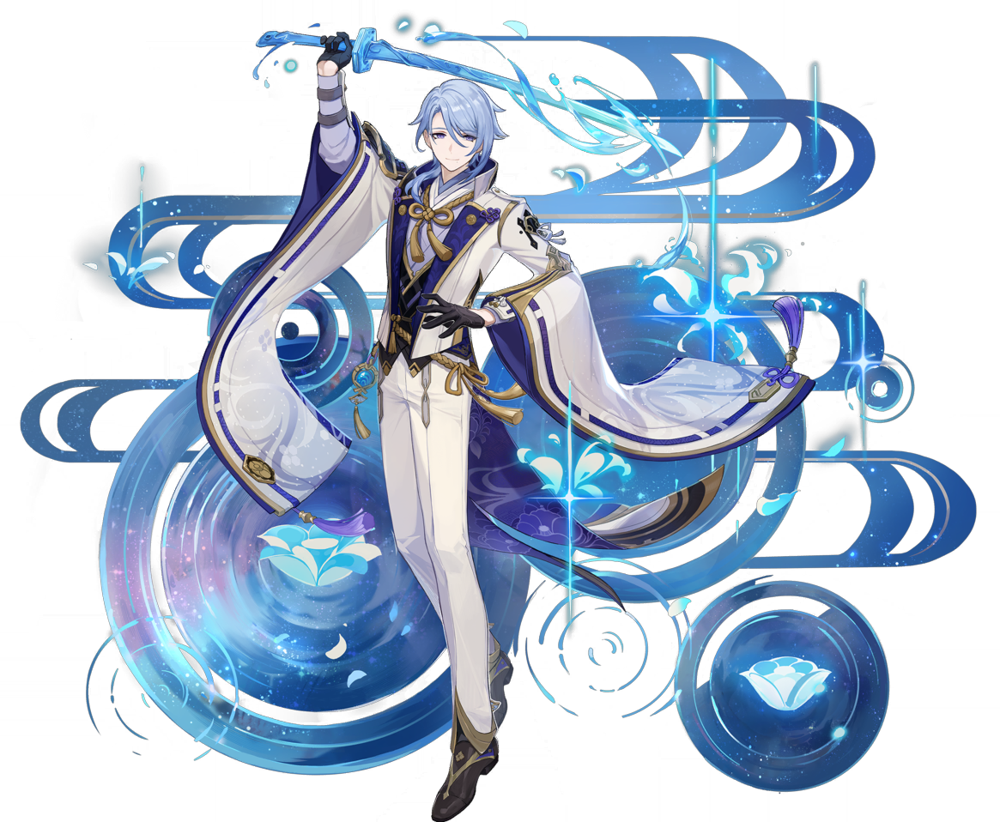
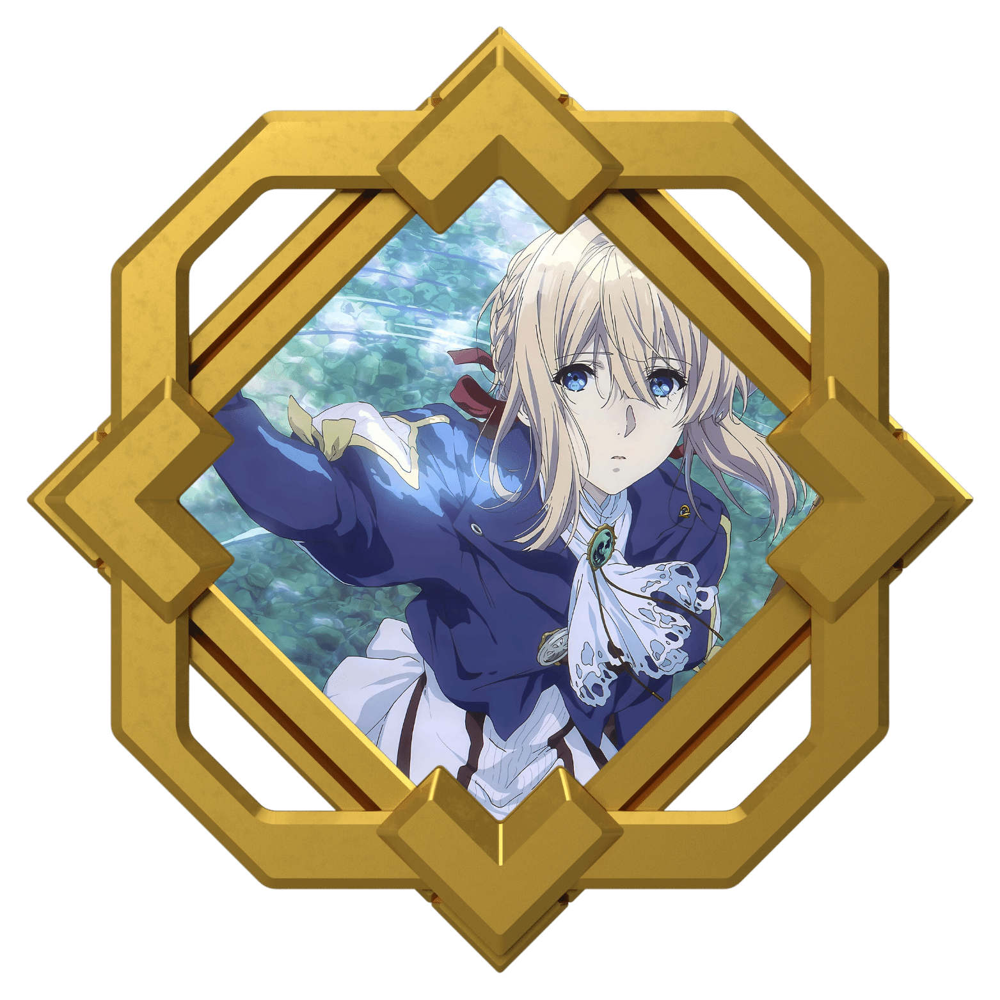
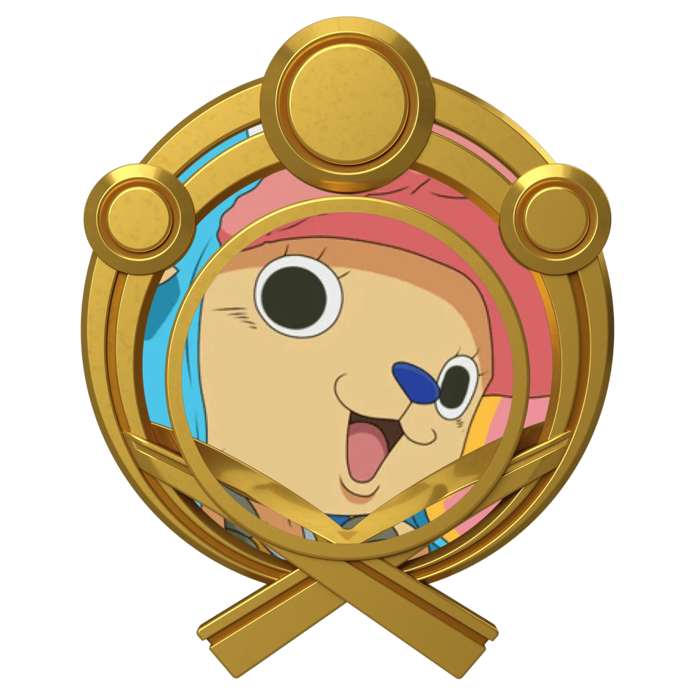
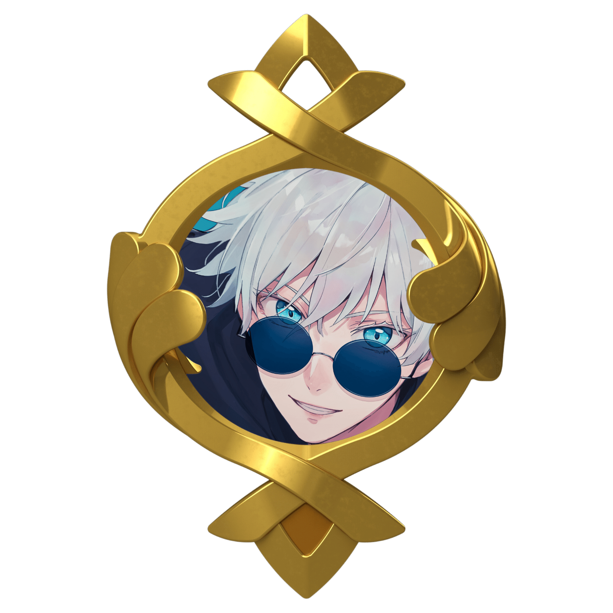

About Kamisato Ayato
Kamisato Ayato (Japanese: 神かみ里さと綾あや人と Kamisato Ayato) is a playable Hydro character in Genshin Impact.

He is the current head of the Kamisato Clan, the older brother of Kamisato Ayaka, and the Yashiro Commissioner. Resourceful and cunning, Ayato keeps a lower profile than his sister and focuses on government affairs in the Commission.
Kamisato Ayato's Character Elemental Burst
Kamisato Art: Suiyuu
Unveils a garden of purity that silences the cacophony within. While this space exists, Bloomwater Blades will constantly rain down and attack opponents within its AoE, dealing Hydro DMG and increasing the Normal Attack DMG of characters within.
Kamisato Ayato's Peers
- Violet from Violet Evergarden
- Chopper from One Piece
- Satoru Gojo from Jujutsu Kaizen